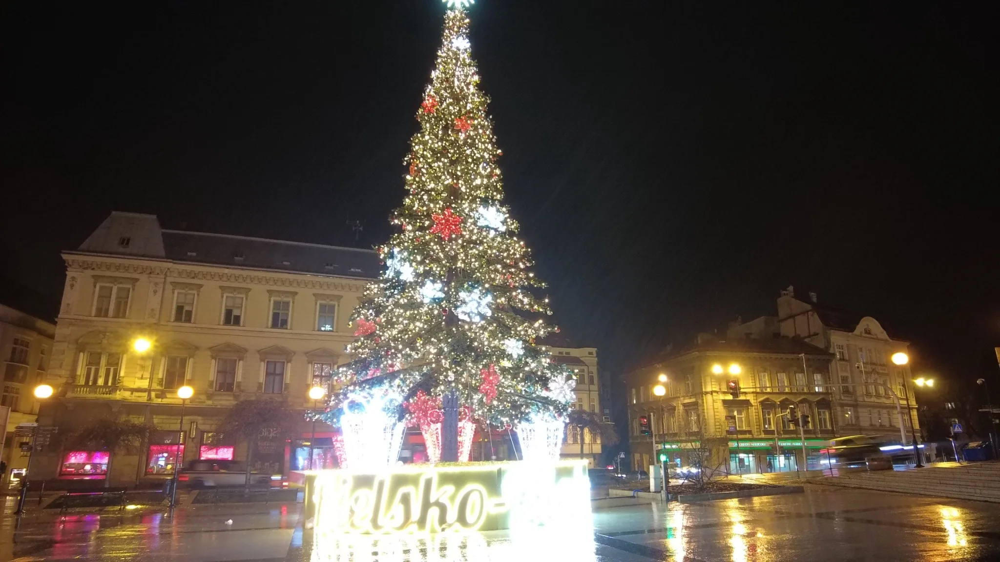

Noël à Bielsko-Biała : ma promenade à travers les lumières
Des lumières au-dessus des ruelles, un sapin de Noël radieux, et Reksio en tenue festive : mes moments personnels de Noël de Bielsko-Biała.
Bonjour, c’est Justine de Tussy Van ! Certaines photos de voyage vous ramènent instantanément à un moment précis. Sur mes photos de Noël de Bielsko-Biała, ce sont les lumières : haut au-dessus des ruelles, autour des fenêtres, et reflétées sur le trottoir mouillé. C’est justement cette ambiance chaleureuse et festive que je veux vous montrer.

Quand toute la ruelle s’illumine
Dans mes photos, il n’est pas nécessaire de neige pour entrer dans l’esprit de Noël. Le sol scintille après la pluie, et la lumière se reflète entre les anciennes façades. Des guirlandes lumineuses pendent au-dessus de la rue, avec des sphères colorées entre elles. Pour moi, c’est la plus belle invitation à ralentir, à s’arrêter, et à lever les yeux pour une fois.
Ce que j’aime vraiment chez BB, c’est ce mélange : la ville a sa propre architecture et sa propre vie quotidienne, et pendant la période de Noël, cette lumière chaleureuse s’installe sur elle. Il n’est pas nécessaire qu’il y ait un grand programme à chaque coin de rue. Même le chemin à travers les rues décorées devient une expérience.


Un sapin de Noël qui transforme la place
Le grand sapin avec ses motifs rouges et blancs est l’une de mes photos préférées de la soirée. En dessous, les paquets cadeaux brillent, et au-dessus, l’éclat s’étend jusqu’au sommet. Tout autour, les maisons se dressent dans le noir, et les couleurs se reflètent sur la place. Des moments comme ceux-ci rendent une visite hivernale spéciale pour moi : on regarde un espace urbain familier et on le vit soudain d’une manière complètement différente.

Renne, Père Noël et un Reksio lumineux
Les motifs festifs de ma promenade incluent aussi le grand renne avec le traîneau et le chien joyeux avec un chapeau de Noël. Reksio s’accorde parfaitement avec Bielsko-Biała et son histoire animée. Bien sûr, il fallait que ce soit une photo souvenir—avec ma casquette rose dans la lueur des lumières.


Mon conseil pour une visite de Noël
Je commencerais la promenade en ville en plein jour et laisserais assez de temps jusqu’au soir. D’abord, découvrez les maisons et les places, réchauffez-vous entre les deux, puis parcourez à nouveau les rues illuminées. Avec des chaussures confortables et résistantes aux intempéries et sans trop de rendez-vous fixes, cette ambiance est la plus agréable à apprécier.
Mes photos sont des souvenirs de voyage de décembre 2023. Ils montrent la décoration lors de cette visite ; L’installation, l’éclairage et les événements peuvent avoir un aspect différent d’autres années. Pour votre rendez-vous, vous pouvez consulter le programme culturel actuel via le site officiel Bielsko-Biała.
Découvrez BB même en journée
Si tu restes plus longtemps, tu trouveras dans mon Compte rendu de voyage Bielsko-Biała vous trouverez la vieille ville, les musées, le centre du cinéma d’animation OKO et des idées pour les Beskides. Pour découvrir pourquoi BB est aussi mon conseil de voyage en Pologne après le salon de Leipzig, lisez mon Contribution aux fêtes commerciales.
Pour moi, Bielsko-Biała est une recommandation particulièrement belle pour la Pologne pendant la période de Noël : grâce aux lumières chaudes, aux petites découvertes en chemin, et à la joie qui perdure dans ces photos de voyage.
À bientôt et bon voyage toujours,
votre Tussy